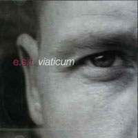
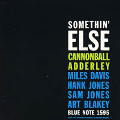
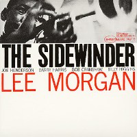
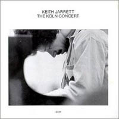
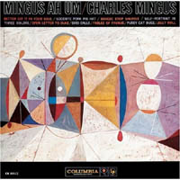

Omiljene jazz ploče I
10. E.S.T. Viaticum
Esbjörn Svensson Trio, ili skraceno E.S.T., jedna je od onih muzickih skupina koje je tesko staviti u jedan kos i reci to je to, oni sviraju jazz ili oni sviraju blues ili rok ili whatever. A takve skupine posebno cenim i volim; posebno ako u mesavini ima elemenata jazza, avangardnog roka, savremene plesne muzike...
Album Viaticum je njihov poslednji studijski album (izdat pocetkom 2005.) i osvaja vec na prvo slusanje. Ovaj album jednostavno ne moze da dosadi. Mozda zato sto je daleko ispred vremena. Od uvodne Tide of Trapidation do zavrsne What thouhgt the way may be long voznja ne prestaje da biva klasicna a u isto vreme jako avangardna. Licni favorit: The well-wisher.
9. CANNONBALL ADDERLEY Somethin' Else
Neko ovaj album pripisuje Miles Davisu, ali je ceo session vodio briljantni Cannonball Adderley. Godina je 1958 i jazz je u punom zamahu sa generacijom mladjih muzicara koja je odrastala uz bop inovacije Charlie Parkera i aranzmanske zahvate Duke Ellingtona i nesto starijom ekipom hard-bopera. Spoj je apsolutno briljantan i kreativni napon izmedju razlicitih pristupa jazzu Cannonball Adderley-a i Miles Davisa u punoj formi ostavlja dominantan pecat na ovoj ploci. Sve kompozicije su apsolutno savrsene, a ton kojim C.A. svira na ovoj ploci je besprekoran. Ovo je jedna od onih "velikih" ploca na kojima se sve magicno sklapa, pravi ljudi, u pravo vreme, na pravom mestu. Nema nervoze, atmosfera je krajnje opustena, muzika tece, solo deonice se smenjuju krajnje prirodno i neisforsirano. Licni favorit: One for Daddy-o
8. LEE MORGAN The Sidewinder
Jedan od Blue Note Records klasika, The Sidewinder predstavlja najpoznatiju plocu Lee Morgana, sa naslovnom numerom koja je postala jedna od poznatijih u jazz istoriji. 1963.,kada je The Sidewinder snimljen Morgan je imao samo 25 godina, ali i besprekoran stil koji je godinama gradio, uceci od najvecih. Groovy, to je verovatno najbolji opis ove ploce koja se ipak izdvaja po svetlijoj, skoro funky atmosferi od uobicajenih Blue Note izdanja. Joe Henderson je fenomenalan na saksu, ali je Lee Morgan apsolutna zvezda ove ploce. Na zalost, Lee Morgana je poginuo sa 33 godine (ubila ga ljubomorna zena!!!), ostavljajuci iza sebe ogromnu kolekciju sjajne muzike Licni favorit: Totem Pole .
7. KEITH JARRETT The Köln Concert
Ovo, u stvari, nije jazz ploca, ali posto mi je toliko draga a slicnu listu verovatno necu skoro praviti odlucio sam da je uvrstim u selekciju. Na kraju krajeva, muzickim laicima (a ja sam svakako jedan od njih) sve sto ima veze sa improvizacijom neminovno upada u kategoriju jazz. Ono sto je neosporno je da je ovaj koncert neponovljiv. Atmosfera na ovoj ploci je toliko magicna da prosto uvlaci slusaoca u vrtloge Jarrettovog zvucnog ludila. Bezbroj finih nijansi i mocnih ponavljanja (n.l.r. - nenormalna leva ruka) ucinili su ovu plocu meni apsolutno posebnom. Iako je stavljam na 7. mesto ako bi morao da izaberem 5 ploca koje bih slusao ostatak zivota (ko bi me uopste naterao na takvo nesto?) ovo bi bila jedna od njih. Licni favorit: IIb
6. CHARLES MINGUS Mingus Ah Um
Prvi deo liste zakljucujem jos jednim jazz klasikom (sta cu, kada su ljudi koji su mi davali ploce izabrali najbolje, hvala Duco, hvala Doktore). Charles Mingus je svakako jedan od najvecih jazz kompozitora proslog veka i veliki bas majstor. Mingus Ah Um je veoma duhovita ploca, prepuna zivota i apsolutno ne postoji mogucnost da dosadi. Vic je svuda, Mingusov nemirni duh (Beneath the Underdog, saradnja sa John Cassavetesom ) zraci, a kreativnost, kada je ovaj majstor u pitanju, se podrazumeva. Uprkos cinjenici da je ovaj album star preko 45 godina, Mingus Ah Um je svez. Avaj, ne ide da ja opisujem ono sto se ne da opisati, ova ploca se jednostavno mora preslusati. Jaki uticaji gospela, bluesa, sizoidnog funka u nastajanju i jazz pristup cine ovu plocu jednom od mojih omiljenih. Licni favorit: Fables of Faubus
Still to come: Steve Turre, Miles Davis, John Coltrane, Art Blakey, Yusef Lateef... so stay tuned
Komentari
E jedno pitanje. Vezano za tvoj komentar da "sve sto ima veze sa improvizacijom neminovno upada u kategoriju jazz." Naravno od strane drugih. Zanima me tvoje misljenje o Medeski Martin and Wood, jer jesu neki lud spoj svega. Licno ih jako volim, ali bih volela cuti jos necije "ne bas tako naivno muzicko" misljenje :) Unapred hvala!
etotako | 31.08.06 11:59
Al ce da radi Limewire... ;)
 Ljube | 31.08.06 12:10
Ljube | 31.08.06 12:10
Steve Turre je na mojoj listi br. 1, i shkoljkice )), super je ovaj post. Jedva chekam nastavak.)
redsandra | 31.08.06 12:11
@etotako: Hvala na komentarima. Drago mi je da si provalila ironiju ;) (uplasio sam se da ce ljudi shvatiti taj komentar za ozbiljno). Da odgovorim na tvoje pitanje; MMW su sve samo ne ludi - kreativni i slobodni pre svega. Bitni, takodje. Tacnije, nisu toliko bitni oni sami koliko taj "anything goes" pristup muzici; ono sto je falilo punku (umece izvodjaca) i ono sto cesto fali vrsnim muzicarima (punk ostrina i stav) MMW imaju. Jedni od mojih favorita novog jazza :)
Bravo, mislio sam da takvu muziku niko ne slusa (osim nas par frikova)!
kiko | 31.08.06 12:15
@Ljube: ;) Dobra fora vezana za ovaj stari jazz je da je vecina izvodjaca mrtva (mislim to nije dobra fora...), a ploce stare i preko 40 godina, pa onda i nema velike moralne dileme - Lime Wire!
@reds: Blago Jani i Jugu :) Tek slede prvih 5
kiko | 31.08.06 12:19
Slusa slusa, i to sad na poslu. Neke kolege tu "kao" nesto ispod oka gledaju, ali momci iz postprodukcije zadovoljno klimaju glavom :)MMW su sjajni! Fala Kiko!
etotako | 31.08.06 12:21
Nego jel bio neko na North Sea Jazz festivalu? (dobra fora da i dalje ima zivih:))) Meni je promaklo za dlaku, ali nekim prijateljima nije. Mislim da cu sledece god biti mudrija.
etotako | 31.08.06 12:27
Uh, North Sea, ja sam planirao ove godine, ali se onda desilo nesto neplanirano, pa cu uskoro imati live jazz po ceo dan i noc ;) Ali, nadam se sledece godine...
kiko | 31.08.06 12:40
Neka neka Kiko, dobar je taj jazz :)
etotako | 31.08.06 12:46
hihihi super super live jazz!)) Kad je to Uskoro? Sledece god. live jazz se sam svira dan i noc, a veliki live jazz na festivalu uzhiva hahaha!
redsandra | 31.08.06 15:35
'Autumn leaves' sa 'Somethin Else' je jedna od meni najdražih melodija. (Da ne pričam o ostatku liste...)
 ubipacijentic | 31.08.06 16:41
ubipacijentic | 31.08.06 16:41
Autumn leaves...M.Davis i J. Coltrane?
redsandra | 31.08.06 17:44
Autumn leaves - Cannonball Adderley i Miles Davis ;)
Dobro jutro!
kiko | 01.09.06 07:12
Moze! Ovde Baker isto to :). Svako jutro.
etotako | 01.09.06 07:41
 RSS feed
RSS feed
 sadržaji se objavljuju pod
sadržaji se objavljuju pod
E cekala sam ovaj jazz post :)
Odlican izbor! Ne znam da li bih se kao laik isto uspela i nakaniti da napravim top 5, tako da ti verujem kad pricas o tezini zadatka. Tesko mi da odlucim o sledecem slusanju nekad. Mingus :))), kako ga ja zovem Ming King :)
etotako | 31.08.06 10:50